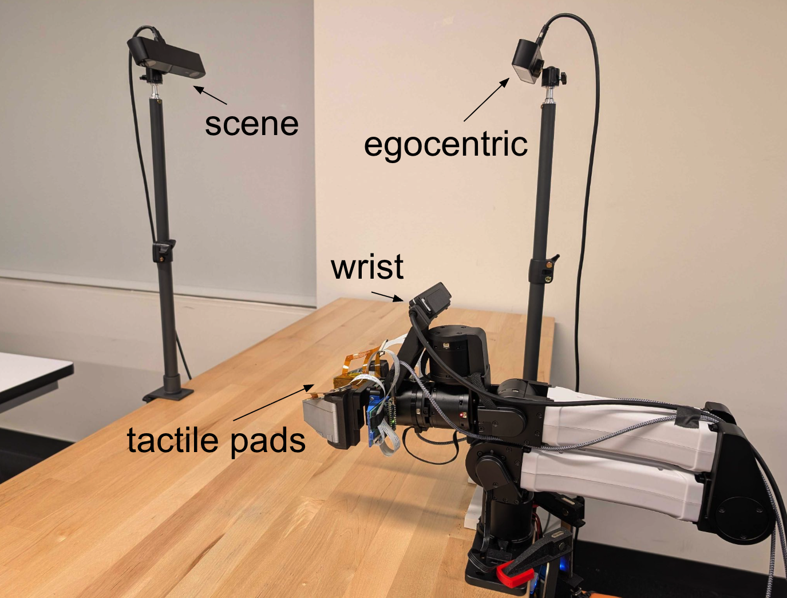
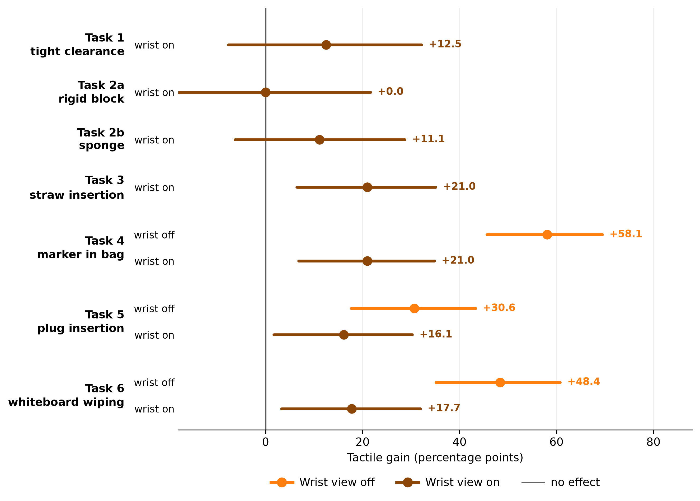
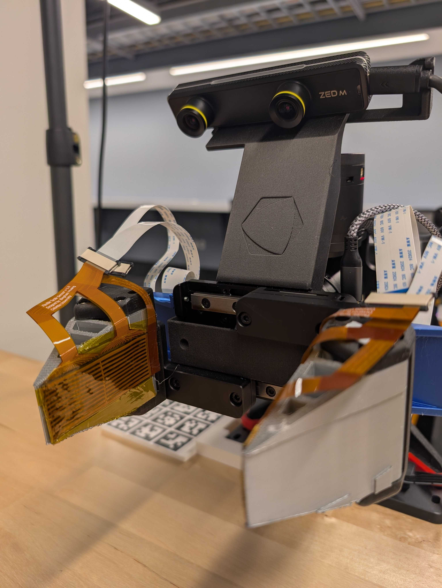
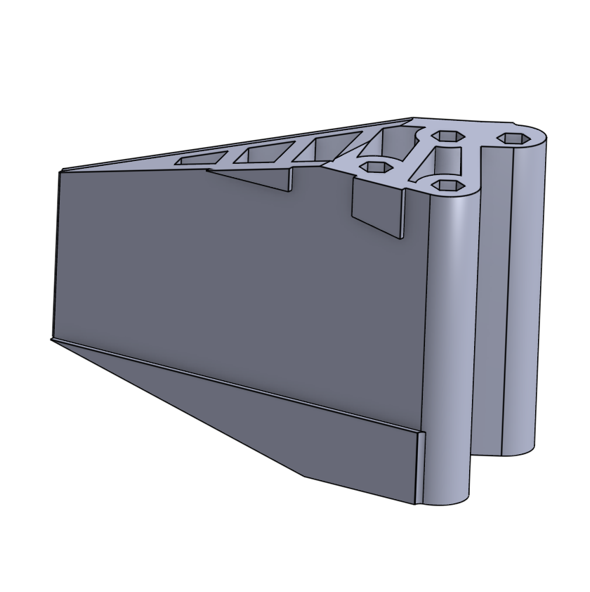

1
Low-cost tactile integration
Two FlexiTac piezoresistive arrays mounted on the inner surfaces of TPU compliant gripper fingers.
CoRL 2026 · 3rd Workshop on Dexterous Manipulation
Toyota Research Institute
Finger-mounted tactile sensing lets a policy recover the performance advantage of wrist cameras using scene and egocentric vision together with touch.
Success-rate differences in percentage points (pp) on three contact-rich tasks, with demonstrations, policy architecture, and optimization settings held fixed.
Learned manipulation policies often rely on wrist-mounted cameras for close-range visual feedback that complements external views of the workspace. However, contact-rich manipulation requires establishing and maintaining contacts that can remain hidden even from wrist cameras. Tactile sensors mounted on fingers can reliably and directly measure contact, without needing visual access. In this work, we show that this feedback enables policies to recover the performance advantage of wrist cameras using scene and egocentric vision together with touch. Our approach incorporates two low-cost tactile arrays into a visuotactile ACT policy, without wrist images during training or deployment. We evaluate six real-world task families spanning placement, insertion, occluded retrieval, and sustained-contact tool use. On three contact-rich tasks, we independently vary wrist-camera and tactile availability while keeping the demonstrations, policy architecture, and optimization settings fixed. Adding wrist cameras improves success by 18.3–28.3 percentage points over vision without wrist images. Adding tactile sensing instead improves success by 31.7–60.0 percentage points and yields higher observed success than vision-only policies with wrist cameras on all three tasks, with significant advantages on two under Holm-corrected tests. These results support finger-mounted tactile sensing as an effective alternative to wrist cameras in the evaluated contact-rich settings.
Two FlexiTac piezoresistive arrays mounted on the inner surfaces of TPU compliant gripper fingers.
Vision-only and visuotactile ACT policies compared across six task families, with wrist-camera availability varied on the three contact-rich tasks.
Evidence for where tactile input helps most (occlusion, insertion, and sustained contact) and where it does not.
Each camera view and each 32×16 tactile map is processed by the same ImageNet-pretrained ResNet-18, so touch enters the ACT policy as two additional image-like observations. The policy predicts 19-step chunks of absolute 7-DoF joint position commands.

Six real-robot tasks. Three are contact-rich or visually occluded (T4–T6) and are the focus of this study; three supporting tasks (T1–T3) cover tight-clearance placement, rigid block and sponge placement, and straw insertion. Videos in this section show demonstrations collected for training.
A marker is hidden inside an opaque bag, so no camera can see the grasp. The policy has to find and secure it by touch.
OcclusionInserting a plug into a socket requires precise alignment that is hard to judge from camera views alone.
Contact-richThe robot picks up an eraser and keeps it in contact with the board while wiping. Success requires erasing at least half of the marked region.
Sustained contact| Task | Tactile relevance | Vision only | Vision + tactile | Δ |
|---|---|---|---|---|
| Wrist camera on | ||||
| T1Tight-clearance placement | Precise contact | 50.0% | 63.3% | +13.3 pp |
| T2aRigid block placement | Low / rigid contact | 60.0% | 60.0% | 0.0 pp |
| T2bSponge placement | Compliance / deformation | 76.0% | 88.0% | +12.0 pp |
| T3Straw insertion | Contact / insertion | 43.3% | 65.0% | +21.7 pp |
| T4Marker in bag | Controlled tactile isolation | 50.0% | 71.7% | +21.7 pp |
| T5Plug insertion | Alignment / insertion | 33.3% | 50.0% | +16.7 pp |
| T6Whiteboard wiping | Tool manipulation | 46.7% | 65.0% | +18.3 pp |
| Wrist camera off | ||||
| T4Marker in bag | Controlled tactile isolation | 21.7% | 81.7% | +60.0 pp |
| T5Plug insertion | Alignment / insertion | 15.0% | 46.7% | +31.7 pp |
| T6Whiteboard wiping | Tool manipulation | 21.7% | 71.7% | +50.0 pp |

| Policy | Wrist camera | Tactile |
|---|---|---|
| Vision-only, no wrist | Off | Off |
| Vision + tactile, no wrist | Off | On |
| Vision-only, wrist | On | Off |
| Vision + tactile, wrist | On | On |
Every configuration uses the scene and egocentric cameras. “Vision-only” does not mean “no camera.” Tasks 1–3 are evaluated in the wrist-on configurations only.
Matched autonomous rollouts with the wrist camera off. Each video shows the scene camera, the egocentric camera, and the live left and right tactile heatmaps. Tactile signals are recorded in every trial for visualization, but only the vision + tactile policy receives them as input. These clips illustrate typical behavior; the success rates above are the evidence. All clips play in real time.
Without wrist images, the vision + tactile policy retrieves the marker in 49 of 60 trials, compared with 13 of 60 for vision only. Vision only with a wrist camera succeeds in 30 of 60.
Without wrist images, the vision + tactile policy completes the insertion in 28 of 60 trials, compared with 9 of 60 for vision only, and still exceeds vision only with a wrist camera (20 of 60).
Most vision-only failures happen at eraser pickup: without wrist images, vision only picks up the eraser in 23 of 60 trials, compared with 48 of 60 with touch. Once it has the eraser, the vision + tactile policy completes the wipe in 43 of 48 trials.


Two FlexiTac piezoresistive arrays are mounted on the inner surfaces of the TPU compliant gripper fingers, each giving a 32×16 pressure map recorded at about 99 Hz. A ZED Mini stereo camera mounted above the gripper serves as the wrist camera in the wrist-on configurations.
A YAM robot arm on a tabletop station with scene, egocentric, and wrist RGB cameras, recorded at about 30 Hz on a clock shared with the tactile sensors.
ACT with a shared ImageNet-pretrained ResNet-18 for camera and tactile views, predicting 19-step chunks of 7-DoF joint positions. Trained and deployed with the Raiden toolkit.
1,258 successful demonstrations across six tasks. 1,000 evaluation rollouts over 20 task-and-observation conditions, with matched initial conditions and fixed success criteria.
Full implementation details are in the paper.
@inproceedings{yang2026tactile,
title = {Tactile Sensors Are an Effective Substitute for Wrist Cameras
in Contact-Rich or Occluded Manipulation},
author = {Yang, Aijia and Tangri, Arsh and Zakharov, Sergey
and Jatavallabhula, Krishna Murthy},
booktitle = {3rd Workshop on Dexterous Manipulation,
Conference on Robot Learning (CoRL)},
year = {2026}
}